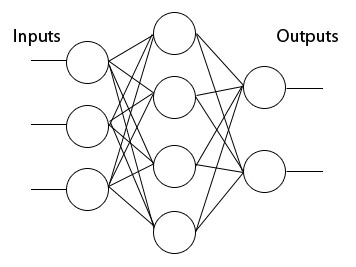

Neural networks are computational models inspired by the known principles of how brain works. Neural network consists of a set of interconnected basic processing units - neurons, which perform some very simple calculation. By adjusting the strength of the connections between neurons, the neural network is able to learn and to adapt its processing for specific purporse.
Example neural network

Basic neuron model
y = f(x1w1 + ... + xnwn)
Neuron components:
Input function - calculates total input for the neuron. Commonly used input function is weighted sum x1w1 + ... + xnwn
Transfer Function - calculates output for the neuron. Commonly used transfer functions are step, sigmoid and hyperbolic tangens.
Connections weights - are used to multiply input values before summing them within input function.
Learning in neural networks
Learning in neural networks is an iterative procedure of adjusting connection weights, until the network gets the desired behaviour. There are two main types of learning algorithms: supervised and unsupervised.
Supervised learning rules use desired output provided by user to calculate the network error, and then this error is used for weight adjustment. Typical formula used in supervised algorithms is:
w(k+1) = w(k) + ue(y, d)
where
u - is learning rate
e - error function (usually simple difference)
y - actual neuron output
d - desired neuron output
w - neuron weight
k - learning iteration step
In supervised learning rules, the learning continues until the overall network error is bellow some acceptable value. The ovarall network error is calculated as mean squared error of output neurons.
Unsupervised learning rules use just provide inputs, to do the weights adjustments. Typical formula used in unsupervised algorithms is:
w(k+1) = w(k) + ug(x, y)
where
u - is learning rate
y - actual neuron output
x - neuron input
g - some function used to calculate amount of change depending of neuron input and output (can be simple multiplication)
w - neuron weight
k - learning iteration step
To learn more about Neural Networks see: